The Basics¶
This tutorial assumes that you know most of these things. If you don't, that's not a problem at all and you can just keep this page open while you read other chapters.
Variables¶
Mathematicians use single-letter variable names because math was
originally written on paper by hand and writing long things by hand
sucks. There are a few exceptions though; for example,  and
and  are functions with 3-letter names. If they would be called and
are functions with 3-letter names. If they would be called and  instead it would be confusing to have a variable named or , so
they are written a bit more verbosely.
instead it would be confusing to have a variable named or , so
they are written a bit more verbosely.
A variable is considered to be a constant if its value doesn't depend
on  (or sometimes some other variable we're talking about). For
example,
(or sometimes some other variable we're talking about). For
example,  and 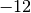 are constants, but 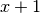 is not a constant
because gets different values depending on what is.
and 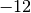 are constants, but 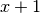 is not a constant
because gets different values depending on what is.
Equality and stuff¶
I'm quite sure you know or you can guess what , 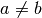, , , , and mean so I won't explain those.
+, -¶
Be careful when you have a minus in front of parentheses, e.g. 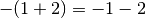 and 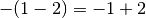.
If we have something like 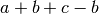 we know that's just because we're
adding  and then we're taking it away. Later you'll notice that we end up
with this pattern surprisingly often and things become nice and simple.
and then we're taking it away. Later you'll notice that we end up
with this pattern surprisingly often and things become nice and simple.
In general, you can move things around like this:
You get the idea: we can put , 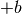 and to any order we want, and for
convenience, we usually write e.g.  instead of 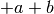.
instead of 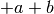.
*, /¶
In this tutorial, a/b is written as 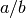 or , and a*b is
written as or simply .
Some handy stuff:
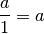
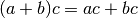
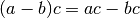

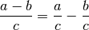
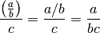
You can use these rules left-to-right or right-to-left. For example, if you want to calculate 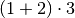 you know you could also do 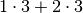, but you can also calculate like .
Note that there is no 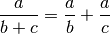 rule; that doesn't work. This also applies to 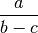.
It's often best to look at which numbers are below a division line and which aren't. For example, if we have 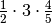 we know that's 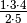 because 2 and 5 were below the lines but other numbers weren't.
If both the top and bottom are being multiplied by something you can get rid of that multiplier. For example:
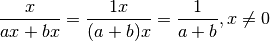
Remember that you cannot divide anything by zero. See Numberphile's awesome zero video if you're wondering why.
Negative numbers behave like this when multiplied and divided. Note how the two -'s cancel out.
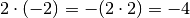
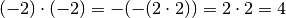
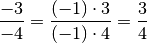
Absolute Value¶
The absolute value of is  in math and something like
in math and something like abs(x) or
Math.abs(x) in most programming languages. It's easiest to think of the
absolute value as stripping off the minus sign. For example,  and
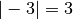.
and
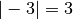.
Powers and Square Root¶
is x**y or pow(x, y) and  is
is sqrt(x) in most
programming languages.
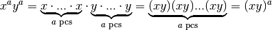
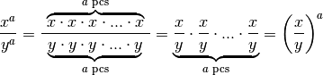
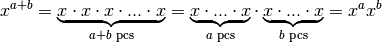
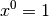
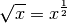
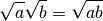
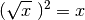
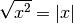
If you're wondering why anything to the power of 0 is 1, you can do e.g.
. The equation should be true with any , so
must be 1 because .
It's easiest to think of as the non-negative number that is when
multiplied with itself. For example, 3 is not negative, so 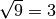
because 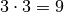. Similarly e.g. 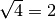, 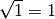 and
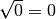. No number produces a negative number when multiplied with
itself, so you cannot do 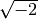 (unless you use complex numbers, but they
are beyond the scope of this tutorial).
You're probably wondering how the heck our 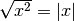 rule works. This example should explain everything:
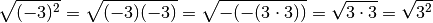
Functions¶
Here's a typical math function:
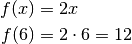
There is no special syntax for defining a function. All we have is the equal sign, and when defining a function we just say that its value at x is equal to something.
If you're familiar with a functional programming language like Haskell, then you'll probably realize that the above math looks a lot like this Haskell session:
Prelude> let f x = 2*x
Prelude> f 6
12
Prelude>
If you're feeling like WTF is this, here's a Python session that should make everything clear.
>>> def f(x):
... return 2*x
...
>>> f(6)
12
Quick note about f(x) versus f x: if you define your own function
called  or
or  you should use
you should use  , but you can do e.g.
, but you can do e.g.  or
with some "special" functions for historical reasons.
or
with some "special" functions for historical reasons.
Equations¶
For example, if you know that you can find like this:
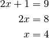
The idea here is that if  then 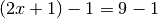; that is, . So you
can do pretty much anything to both sides of the
then 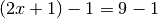; that is, . So you
can do pretty much anything to both sides of the  and the equality will
still work. I started by substracting 1 from both sides and then I divided
everything by 2.
and the equality will
still work. I started by substracting 1 from both sides and then I divided
everything by 2.
Normal limitations apply here; for example, if you have and you divide
by you get 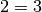 and it seems like no can satisfy the equation.
However, you cannot divide by  and turns out that
and turns out that  is a valid solution
because and .
is a valid solution
because and .
You can also apply most functions to both sides. For example, you can do this with 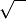:

Areas¶
If you are a programmer you'll probably understand areas best as the number of pixels in a shape. For example, if you create a GUI program that creates a 300 by 200 window, it contains pixels.
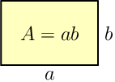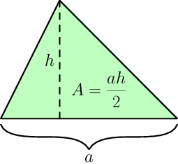The triangle area thing is actually quite straight-forward to understand. Let's draw a rectangle around the triangle like this:
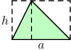
Now you can see that the triangle splits both pieces of the rectangle in half, so the triangle area must be half of the rectangle area .
Volumes¶
A volume is really the same thing as an area, but for 3D things. If the window was 50 pixels deep, then 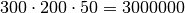 pixels would fit inside it.


The thing is actually just a special case of the
cylinder. The shape of the cylinder's base can be anything, and in the
thing the base area is and the height is .
See Also¶
This chapter shows only the things you need in the rest of this tutorial, but this cheat sheet is more complete.